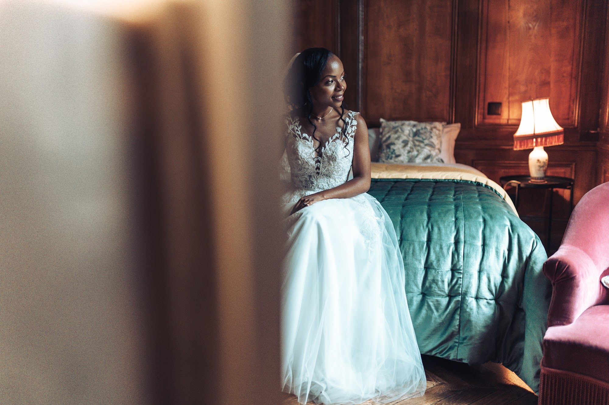
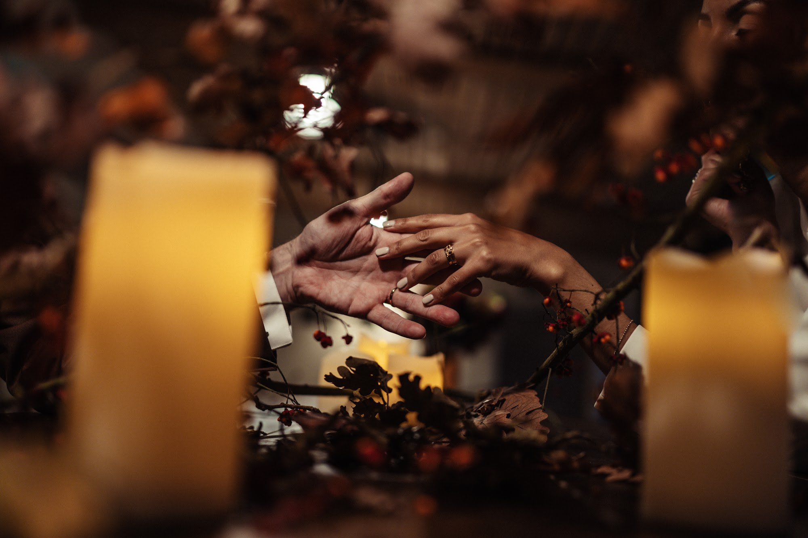
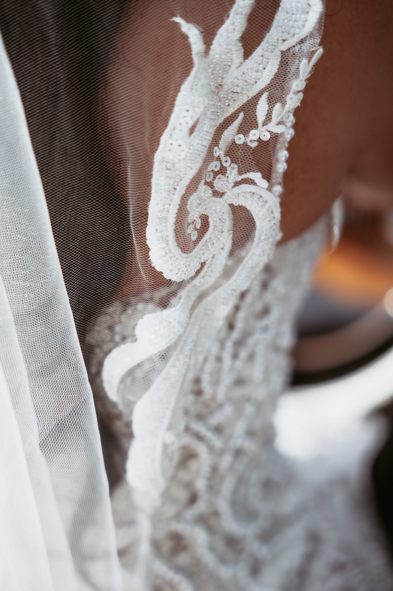
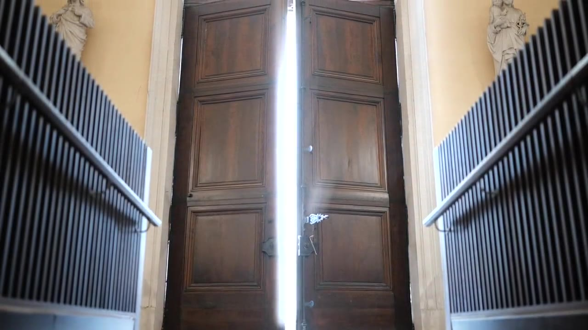

Your Multicultural Wedding Photographer in France
Choosing your multicultural wedding photographer in France means finding someone who understands the profound meaning behind your traditions. Whether you are blending cultures or honoring your heritage with a vibrant celebration, my approach is to document these moments with elegance and discretion. I focus on natural light and true emotions to craft a timeless visual legacy.

Embracing diverse traditions in your celebration
Weddings that blend different cultures possess a unique and powerful soul. It is the meeting of two families, two histories, and often two different parts of the world. When I document a multicultural wedding, I am always moved by the richness of the exchanges and the beauty of the contrasts. You might plan an elegant secular ceremony in the gardens of a French chateau near Lyon or in the Beaujolais vineyards, followed by a reception where traditional percussion instruments make the walls vibrate.
My role is to craft a cohesive visual narrative that ties all these influences together. I look for the pride in your parents' eyes as they see you respecting their customs, while fully embracing the modern identity of your couple. Whether you celebrate in the Rhone region, the French Alps, or Provence, I immerse myself in the atmosphere of your day. I do not orchestrate these moments. I observe them closely to capture their absolute sincerity.

Documenting the henna night and intimate rituals
The henna night is a distinct and highly meaningful part of the oriental wedding process. It is generally a more intimate gathering, bringing together the women of the family and close friends in a warm atmosphere. It is an event filled with symbolism, where traditional songs accompany the application of henna, intended to bring happiness and prosperity. I am particularly drawn to the lighting of these evenings, often illuminated by candles or dim lamps that create a cozy, hushed mood.
As a photographer, I remain as unobtrusive as possible so as not to disrupt this intimacy. I focus on the storytelling details. The skilled hands drawing the intricate patterns, the traditional jewelry catching the light, the tears of joy on your mother's face. Documenting this transmission between generations requires great sensitivity and a careful reading of light to preserve the warmth of the moment without interfering.

Photographing the intricate details of your heritage

Attire holds a central place in Moroccan, Algerian, or other multicultural weddings. Each outfit tells a story of a region, a traditional craftsmanship, and a part of your identity. The heavy velvet, the golden embroidery of a caftan, or the delicate fabrics of your cultural dress are works of art that deserve to be photographed with care. I pay close attention to the texture of the fabrics and the way the natural light highlights the silver or gold threads.
However, I refuse to turn your wedding coverage into a stiff fashion catalog. These garments are meant to be worn, to move with you. I prefer to photograph the flow of a train as you walk toward your guests, or the detail of the embroidery when your partner holds your hand. It is the life animating the clothing that interests me. This is how the materials make sense and how the photographs maintain a natural, editorial feel.
Navigating vibrant celebrations with discretion

Cultural celebrations are renowned for their overflowing energy. The entrance of the bride and groom accompanied by the drums of a dakka marrakchia or a zaffa is a moment of rare intensity. The music is loud, the guests are singing and dancing, and the whole room seems to vibrate. Amidst this excitement, my working method relies on absolute discretion. I blend in with your guests, moving gently to anticipate the actions without ever blocking the view or imposing my presence.
This documentary approach allows me to capture genuine expressions. Your father's broad smile in the middle of the dance floor, a spontaneous embrace with your sister between two songs. I want you to be able to relive the intensity of this party by looking at your photos, without remembering my presence at that specific second. It is a subtle balance between being at the heart of the action to capture the energy and stepping back to let spontaneity unfold.
Guiding your portraits between outfit changes

A multicultural wedding is often paced by multiple outfit changes. This steady rhythm leaves little downtime for the couple. This is why I like to steal a few minutes of quiet time with every new dress or suit. As soon as you are ready, we take a short moment, away from the noise, to take a few portraits. These breathing spaces are essential for you to reconnect with each other.
For these portraits, I always favor a natural approach. I guide you to find beautiful light, perhaps near a large window of your French chateau or in a shaded alley of the estate grounds, but I do not force you into stiff poses. I simply invite you to interact, to talk to each other, to embrace. The result is elegant, editorial-style images that showcase your outfits while preserving the authenticity of your emotions.
Mastering light for evening receptions
Mastering light is the major technical challenge of large-scale receptions. Wedding venues capable of hosting hundreds of guests in France are often vast and plunged into darkness once night falls. Ambient lighting, lasers, or colorful DJ spotlights create a festive atmosphere but require a rigorous photographic approach to maintain natural skin tones and elegant colors.
I use the necessary techniques to shape the light without altering the mood you have chosen. I rely as much as possible on the available light to faithfully transcribe the atmosphere of your evening. When it is essential to freeze the movement of the dancers, I add discreet lighting that blends into the environment. Your evening images thus retain the warmth and elegance that characterize the entire gallery.

Frequently asked questions
How do you handle multiple outfit changes during a multicultural wedding?
I adapt to the intense pace of your day by working closely with your vendors. At each outfit change, I plan a short five-minute session to capture elegant and natural portraits before you make your grand entrance back into the room.
Can you cover multi-day events like a henna night and the main wedding day?
I offer tailored collections to cover multiple days of festivities. I can easily arrange to document your intimate henna night or pre-wedding rituals, followed by the large reception on your main wedding day.
Do you offer videography services for multicultural weddings in France?
I provide videography services myself to capture the energy, the music, and the speeches of your event. If you want both photography and videography, I work with a trusted second professional to ensure we cover every angle seamlessly.
How do you blend different cultural traditions in your photography?
My approach is primarily documentary and observation-based. Before the wedding, we take the time to discuss each tradition and its significance to you, so I can anticipate the key moments and capture them with all the respect they deserve.
If you are planning to honor specific cultural traditions during your celebration in France, let us talk about how we can document them beautifully.
Let’s talk about your project